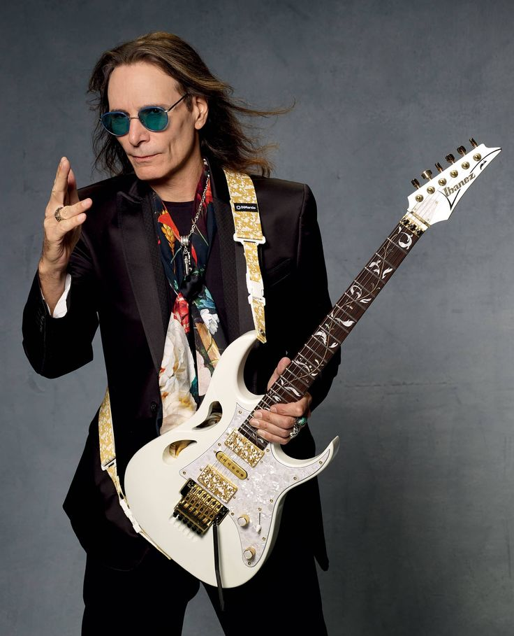

Alem da banda WT2, Kim Daniel também é membro da banda The Poles e está atualmente cursando musica aplicada na Universidade Howon
Um dos artistas de maior renome proeminencia no cenario indie-coreano
Membro e fundador da banda instrumental Polyphia. Ele é amplamente reconhecido por inovar o gênero de rock progressivo e metal, incorporando elementos de hip-hop, EDM e funk, e por sua tecnica avançada que viralizou no YT
Além de sua carreira musical, Henson colaborou com marcas como Ibanez (guitarras de assinatura) e Neural DSP (plugin Archetype: Tim Henson). Ele também atuou como músico na trilha sonora da série Cobra Kai e no filme F1: O Filme (2025), além de estar casado com Gigi Henson.

Conhecido por seu estilo tecnico e original que abrange rock instrumental, hard rock, heavy metal e rock progressivo, Vai é creditado como um dos primeiros guitarristas a utilizar guitarras de 7 cordas e desenvolveu a tecnica de Joint shifiting
Sua carreira inclui passagens por bandas lendarias como: Frank Zappa, Alcatrazz, David Lee Roth e Whitesnake
Premios: 3 Grammy e doutor honoris
Ele é mundialmente reconhecido como um dos musicos mais influentes da historia do rock, tendo popularizado o Rock alternativo e o movimento Grunge
Foi responsavel por criar albuns e musicas atemporais, como o album Nevermind e a musica Smell Like Teen Spirit
Kurt faleceu em 1994, encontrado em sua casa em Seattle